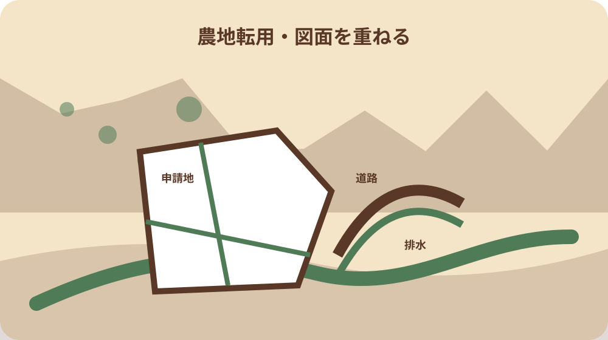

先に結論を確認する
この記事の答え：許可通知と申請書控えを起点に、対象地番、第4条・第5条の別、転用目的、面積、配置・排水図、事業計画、工期、申請者を一件表へ写します。現場の計画が異なる場合は着工せず、計画変更の要否を森町農業委員会へ確認します。
森町で最初に照合する条件：許可通知、申請書控え、対象地の登記事項、公図写、配置・排水図を同じ案件番号で結び、地番と工事範囲を着工前に照合する。
許可後・着工前の一件照合表を先に作る
森町で農地転用許可を受けた後の結論は、許可済みの一語で工事へ進まないことです。許可通知、申請書控え、登記事項、公図写、配置図、排水図、事業計画を案件番号で束ね、許可された内容と施工者へ伝える内容を着工前に一行ずつ照合します。
一件表の先頭には申請者、土地所有者、転用事業者、対象地番、面積、転用目的、許可日、工期を置きます。資料により表記が違う場合は都合のよい値へ統一せず、相違欄へ原文と確認先を残します。現場写真は撮影日と方向を付けます。
この表は許可条件を独自解釈するためのものではありません。申請時から配置、用途、排水、面積、施工主体が変わっていないかを見つけ、違いがあれば着工前に森町農業委員会へ質問するための資料です。許可通知に個別条件があれば原文のまま転記します。
表の末尾には『着工可』『照会中』『変更案あり』『資料不足』の状態欄を置きます。ただし着工可は所有者や施工者の思い込みで付けず、許可資料と最新計画の照合が終わった日、確認者、残る条件を併記します。未回答の質問が一つでもあれば、その質問に関係する作業範囲を明示して保留します。
第4条と第5条を許可通知から読み分ける
森町は第4条を農地所有者が自ら転用する場合、第5条を転用目的で売買や賃借を行う場合と区別しています。家族内で『自分の土地だから第4条』と決めず、許可通知と申請控えに記された条項、申請者、権利移動を確認します。
第5条案件では土地所有者と転用事業者を別行にします。売買契約の買主、工事発注者、許可申請者が同じとは限りません。連絡担当だけを申請者欄へ入れず、契約書、委任状、申請控えから役割を照合し、変更があれば窓口へ伝えます。
第4条案件でも、所有者が途中で変わる、事業主体が変わる、計画を承継する事情が生じれば、元の申請のまま施工できるとは断定しません。森町は計画変更様式を公開しているため、変更前後の関係図と日付を作り、使う様式を確認します。
連絡表には土地所有者、転用事業者、設計者、施工者、行政書類の連絡担当を分けて載せます。許可通知を受け取った人が工事内容を決める人とは限りません。誰が変更を発見し、誰が町へ照会し、誰が現場へ再開を伝えるかを決め、伝言だけで再開しない仕組みにします。
申請地番と工事範囲を一筆ずつ固定する
対象地は住所や通称ではなく、一筆ごとの所在、地番、登記地目、面積で表にします。複数筆の合計面積だけを施工者へ渡すと、隣接する非対象地まで整地する危険があります。許可対象筆と工事を行わない筆を別色ではなく文字でも区別します。
許可面積と実測や施工図の面積が違う場合、端数だと見過ごしません。どの資料のどの単位か、道路後退や水路、法面を含むかを確認し、差の理由を農業委員会へ示します。境界自体が不明なら転用許可の確認と境界確認を別の専門業務にします。
現地では地番札があるとは限りません。公図写、案内図、配置図、撮影方向を同じ番号で結び、杭や畦だけで筆界を確定しません。施工範囲を示す仮表示も、所有者、施工者、隣接関係者で意味を共有し、法的境界標と混同しない表示にします。
登記事項や公図は取得日を記録し、申請時の控えと着工前に取得した資料を別列にします。分筆、合筆、所有権移転が生じた可能性があれば、古い地番表のまま現場へ渡しません。変更が許可対象へ与える影響は、更新資料を添えて農業委員会と登記の専門家へ目的別に確認します。
公図写の道路・水路・隣接地を現地へ重ねる
森町の第4条提出書類一覧は、公図写に縮尺、方位、申請地と隣接地の地番、地目、地積、所有者を記し、申請地を黄色、道路を赤、水路を水色で示すよう求めています。着工前表にもその凡例と取得日を残します。
図上の赤線を現地のすべての道路、青線をすべての排水先と断定しません。通称道路、農道、水路、側溝、暗渠は管理者や機能が異なり得ます。工事車両の進入や排水接続を決める前に、図面名と現地写真を示して各管理窓口へ確認します。
隣接所有者の表示は申請時点の資料です。着工までに名義や連絡先が変わった可能性もあるため、個人情報を無制限に現場配布せず、必要な承諾や説明の相手を確認します。公図写は位置関係の資料として使い、境界確定図の代わりにはしません。
工事車両の進入口、仮設通路、残土搬出経路は、許可対象地の確認とは別欄にします。経路が他人地、農道、水路敷にかかる場合、転用許可が通行や占用の承諾を兼ねるとは扱いません。道路・水路管理者、土地所有者、地域の調整先へ必要な確認を分け、回答資料を経路図へ結びます。

配置図と排水系統を施工図へ渡す
森町の提出書類一覧は平面配置図へ排水系統を示すよう案内しています。建物、駐車区画、資材置場、進入口、法面、排水方向を許可申請時の図と施工図で対照し、位置が同じか、寸法や用途が変わったかを確認します。
現場都合で排水方向を変える、造成高を変える、建物を移動する提案が出たら、工事打合せだけで確定しません。変更案を赤書き図にし、周辺農地や水路への影響、計画変更の要否、他法令の確認先を森町農業委員会へ尋ねます。
施工者へ渡した図面には版番号と交付日を付けます。古い見積用図面と許可に使った図面が同じファイル名なら、誤施工の原因になります。差替え前の図面は履歴として保存しつつ、現場用には使用不可の表示を付け、最新版の受領者を記録します。
排水の出口だけでなく、敷地内の勾配、集水位置、沈砂や調整設備、下流側の管理者を質問表へ置きます。申請図に描かれた線が現地でどの構造物につながるかを施工者と確認し、下流への接続承認や別手続が必要なら着工工程から切り離して完了条件を設定します。
事業計画と現場変更の停止点を決める
森町農業委員会の注意資料は、許可に係る事業計画どおりでない転用が農地法違反となり得ると説明しています。許可済みだから自由に用途を変えられるとは読まず、転用目的、利用者、工期、施設、面積の変更を停止点にします。
停止点に該当したら、現場監督は作業を進めず、変更内容、理由、発生日、影響範囲を一枚へ書きます。所有者や発注者が口頭で了承しても行政上の確認が済んだとは扱いません。質問日、担当部署、回答、必要様式を一件表へ追記します。
無許可転用や計画と異なる転用には、工事中止、原状回復等の命令や罰則があり得ると森町資料は注意しています。読者を不安にさせるためでなく、変更を早期に共有する理由として扱い、個別の違反判定は町や県へ委ねます。
変更履歴には提案者、変更理由、変更前図、変更後図、工期・費用への影響、町へ照会した日を入れます。採用しなかった案も削除せず、なぜ戻したかを残します。同じ案が別の担当者から再提案されたとき、既に確認した範囲と新たに確認すべき条件を区別できます。
一時転用と恒久転用の復旧条件を分ける
森町は第5条の通常様式と一時転用の提出書類を分けています。一時転用なら使用期間、仮設物、表土の扱い、復旧時期を許可資料から抜き出し、恒久転用の完成形と同じ工程表へ入れません。許可期間の始期と終期を西暦で記します。
工事用ヤードや仮置場を『少しの間だけ』という現場表現で一時転用と決めません。対象地番、用途、期間、復旧方法を示して申請区分を確認します。期間延長や用途変更が必要になった場合は、期限前に変更手続の要否を尋ねます。
復旧写真は作業前、使用中、撤去後を同じ方向から撮ります。ただし写真だけで農地へ復旧したことや行政確認の完了を証明したとは扱いません。完了報告に必要な資料、確認方法、原状回復の範囲は許可書類と窓口回答へ戻ります。
表土をどこへ仮置きし、どの厚さで戻すか、排水や進入口をどう撤去するかなど、許可資料に記された復旧内容を施工手順へ落とします。工事完了と農地としての復旧確認を同日と決めず、町への報告、現地確認、借地返還など案件ごとの終了条件を別々に閉じます。
資材置場等の継続報告を工程表へ入れる
静岡県は2024年4月1日以降、建築物を伴わない資材置場等の農地転用許可について、工事完了から3年間、6か月ごとの事業実施状況報告が必要と案内しています。該当案件では完了日だけでファイルを閉じません。
工程表には許可日、工事完了日、各報告基準日、提出日、受付確認、添付写真の番号を置きます。『半年ごと』を感覚で管理せず、個別許可がこの取扱いに該当するか、最初の報告時期を森町農業委員会へ確認します。
利用状況が申請目的から変わった、空き区画が増えた、別の物を置くようになった場合も、次の定期報告まで待ってよいとは決めません。変更を確認した日と現況写真を残し、計画変更や是正の要否を所管へ早めに相談します。
三年間の途中で土地を譲渡、賃貸、事業承継する可能性がある場合、報告担当が自動で次の所有者へ移るとは考えません。許可名義、現在の利用者、報告書の提出者、写真保管者を町へ確認し、契約書や引継書に次回報告日と未提出期間を具体的に記載します。
着工・進捗・完了の証拠を別々に残す
着工記録には着工日、施工者、現場責任者、使用図面の版、着工前写真を置きます。進捗記録には撮影日、施工範囲、計画との差、次の確認事項を置きます。完了記録には工事完了日、完成図、完了写真、残工事を記します。
請求書の支払日を工事完了日へ置き換えず、建物の引渡日を転用完了日と自動的に同じにしません。契約、施工、行政報告、登記には別の日付があります。一件表に各証拠資料の番号を付け、後から誰が判断したか追えるようにします。
写真は同じ場所と方向で比較できるよう、撮影位置図を作ります。盛土高や排水勾配を写真だけで精密に判断せず、必要な測量や施工検査は資格者へ依頼します。行政へ提出した写真と社内管理写真も区分し、個人情報を含む画像の共有先を限定します。
撮影記録には対象地番、工程、撮影方向、写っている基準物を付けます。近隣住宅や車両、人の顔が写る場合は提出・共有に必要な範囲を確認し、私的なクラウドへ無期限に置きません。写真を加工した場合は原本を残し、寸法や範囲の証拠として過大評価しないようにします。
転用事実確認と地目変更登記を分離する
森町は転用完了後、転用事実確認願と完了届を各2部速やかに提出し、宅地等への地目変更登記を進めるよう案内しています。工事完了、町への提出、転用事実の確認、登記完了を別々の行にして管理します。
完了届を発送しただけで受付済み、転用事実確認済み、登記変更済みとは記しません。提出方法、到達確認、受付日、返却や交付の有無を森町へ確認し、登記は法務局の資料で別に完了を確かめます。各控えの保管先も索引へ記します。
翌年度の固定資産税評価がどうなるかは、転用手続だけから断定しません。森町の税務担当へ1月1日時点の現況、許可、工事完了、地目変更の資料を示し、農業委員会への完了報告と課税上の確認を分けて記録します。
完了後に土地を売却する場合、登記地目だけを見せて許可どおり施工したと説明しません。許可計画、完成図、変更確認、完了届、転用事実確認の有無を買主側へ資料名で示します。未完了の行政工程や継続報告があれば、契約前に担当と期限を整理します。
大石の視点：許可済みを自由施工と読まない
ここからは公的説明ではなく、私、大石浩之の実務上の提案です。許可通知を受けた案件ほど、私は『許可済み』という短い伝言を使わず、何を、どの地番で、どの図面どおりに行う許可かを現場打合せの最初に読み上げます。
私は一件表を許可計画と実施工の二列にします。地番、面積、用途、配置、排水、工期、施工者を横に並べ、同じなら確認日、違えば停止と照会先を書きます。これは町の正式様式ではなく、変更を見逃さないための私の補助表です。
売却や建築を急ぐ相談でも、許可後の条件確認を省略してよいとは考えません。道路、境界、水路、農地、登記を別の専門領域として確かめ、未確認事項があれば工期や契約条件へ反映します。まだ工事しない選択も含め、資料を閉じずに保管します。
私が買主や施工者へ渡す要約には、許可がある事実と、現場で自由に変更できないことを同時に書きます。許可の存在だけを安心材料にせず、変更履歴と完了工程も価格や引渡条件の前提にします。分からない項目は推定せず、回答を得る担当と期日を設定します。
次の所有者へ許可計画と実施工を二列で渡す
完成した引継ぎ冊子は、許可通知、申請控え、対象地一覧、公図写、配置・排水図、変更履歴、着工・進捗・完了写真、完了届控え、転用事実確認、登記資料の順にします。表紙へ未完了の工程と次の担当を明記します。
次の所有者には工事が終わったという結論だけでなく、許可計画と実施工の差、町へ確認した変更、継続報告の有無を説明します。資材置場等の定期報告が続くなら、次回基準日と提出主体を契約や引渡し資料へ明記します。
今日できる一歩は、許可通知の対象地番と手元の配置図の地番を読み合わせることです。次に現場へ渡す図面の版を確認し、違いが一つでもあれば工事指示を確定せず森町農業委員会へ質問します。この順序なら許可後の手戻りを具体化できます。
冊子の保存年限は契約や報告義務、登記、将来の売却で必要となる範囲を確認して決めます。期限を決めず処分したり、全資料を無制限に共有したりしません。紙と電子の索引番号をそろえ、次の担当が許可通知から最新の現場図まで迷わずたどれる状態を完成とします。
現場が長期間動かない場合も、許可が自動的に失効しない、いつでも着工できるとは本稿で決めません。許可日、予定工期、未着工理由、土地の現在利用を整理し、許可の有効性、計画変更や進捗報告の要否を森町農業委員会へ確認します。草刈り等の管理記録は工事記録と別欄にします。
家族や事業者が交代するときは、未確認事項を口頭の注意で終えず、質問文、関係図面、回答期限を引継書へ載せます。受領者は許可通知、最新図面、変更履歴、次回報告日の四点を開けるか確認し、読めないファイルや失効した共有リンクをその場で差し替えます。